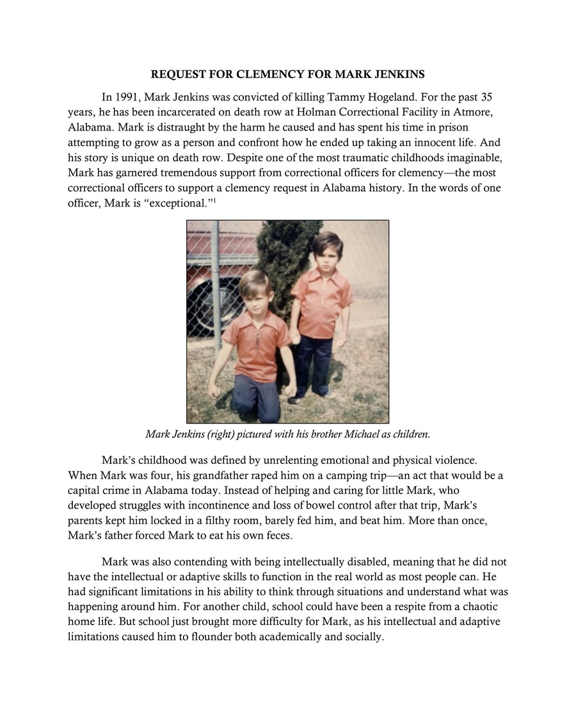

The petition
The request for clemency.
On September 28, 2026, Mark’s lawyers filed a formal request with Governor Kay Ivey asking her to commute his death sentence to life in prison without the possibility of parole. Under the Alabama Constitution, the Governor alone holds that power.
The clemency petition sets out who Mark was as a child, what was done to him, the disability he has lived with his whole life, the crime he committed and the remorse he has carried since, and the man the officers at Holman have watched him become over thirty-five years.
It is not a legal brief arguing that Mark is innocent. Mark took Tammy Hogeland’s life, and he will die in prison either way. The question the document puts to the Governor is how.

The document
Read it here.
The petition is a thirty-six page PDF. It reads better in your phone’s own reader than in this page.
Only the Governor can grant clemency.
The officers have written. The juror has written. The decision is hers alone. Add your voice.